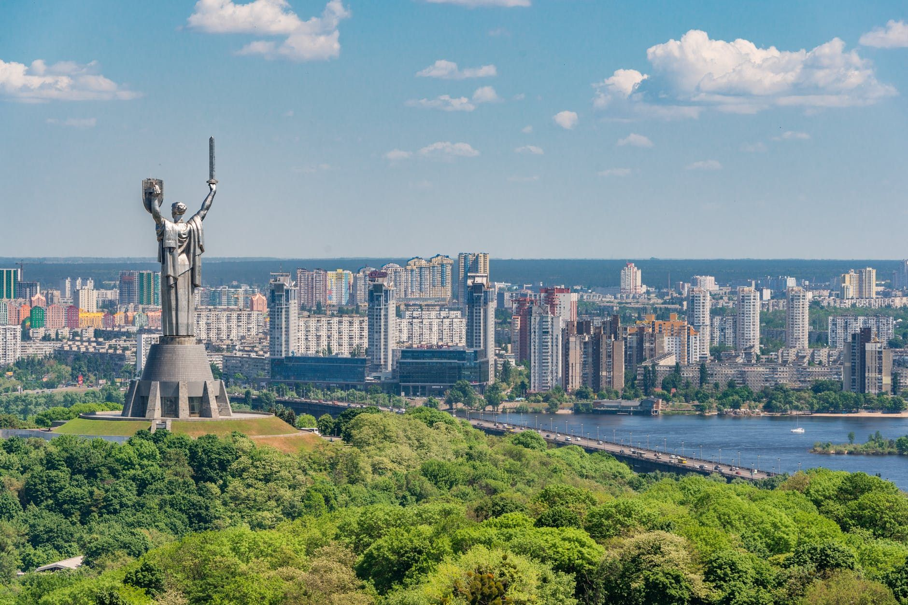

Дата та місце народження: 17 листопада 2006 року, м Шахтарське, Дніпропетровська область.
Освіта: Школа №2.
Хобі:
Улюблені фільми:
Київ — столиця та найбільше місто України, головний політичний, соціально-економічний, освітній, культурний та науковий центр країни. Розташований у середній течії річки Дніпро, яка ділить місто на лівобережну та правобережну частини. Київ є одним з найдавніших міст Європи, засноване понад 1500 років тому, і має статус міста зі спеціальним статусом. Серед відомих визначних пам'яток міста — Софійський собор, Києво-Печерська лавра, Майдан Незалежності та Андріївський узвіз.
